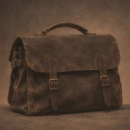

Рабочий набор: Вера Илина
Личные принадлежности для расследования; состав согласуют с ведущим. Набор не даёт автоматических бонусов.
Владелец по комплекту: Вера Илина
Рабочий набор: Глеб Тен
Личные принадлежности для расследования; состав согласуют с ведущим. Набор не даёт автоматических бонусов.
Владелец по комплекту: Глеб Тен
Рабочий набор: Ася Бель
Личные принадлежности для расследования; состав согласуют с ведущим. Набор не даёт автоматических бонусов.
Владелец по комплекту: Ася Бель
Рабочий набор: Роман Век
Личные принадлежности для расследования; состав согласуют с ведущим. Набор не даёт автоматических бонусов.
Владелец по комплекту: Роман Век
Рабочий набор: Нина Вельд
Личные принадлежности для расследования; состав согласуют с ведущим. Набор не даёт автоматических бонусов.
Владелец по комплекту: Нина Вельд
Рабочий набор: Оскар Лин
Личные принадлежности для расследования; состав согласуют с ведущим. Набор не даёт автоматических бонусов.
Владелец по комплекту: Оскар Лин
Рабочий набор: Майя Руд
Личные принадлежности для расследования; состав согласуют с ведущим. Набор не даёт автоматических бонусов.
Владелец по комплекту: Майя Руд
Рабочий набор: Денис Бром
Личные принадлежности для расследования; состав согласуют с ведущим. Набор не даёт автоматических бонусов.
Владелец по комплекту: Денис Бром